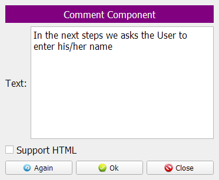
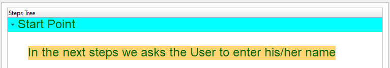
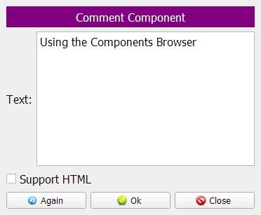
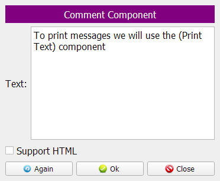
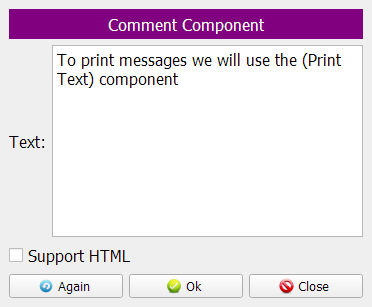
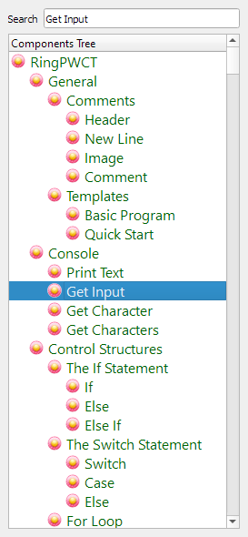
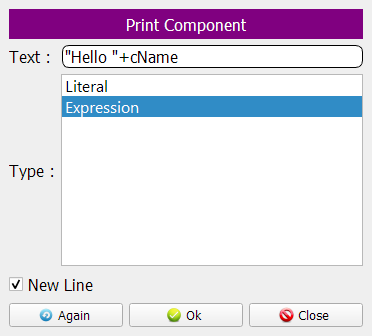
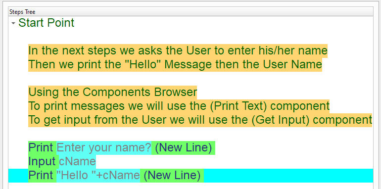

Say Hello program
In this chapter we are going to learn how to create the Say Hello program
The User will enter his/her name then we will print (Hello UserName)
In this lesson we will learn about
Variables
Expressions
Getting input using the Keyboard
Printing Expressions that merge between two strings
Introduction
We can create this program quickly using the Quick Start component
Program Steps
After selecting the (Say Hello) template, we will get the next steps in the Goal Designer
In the Output Window, The program prints the message (Enter your name?)
After typing (Mahmoud), We see the (Hello Mahmoud) message on the Screen

Creating the Program
To create this program we will use the next components
Comment (Optional)
Print Text
Get Input
Using the Comment component, we will add some comments to our program!

We can use the same component many times using the (Again) button
We will add more than one comment to the program
In the Interaction Page, We write the comment in the Text Field
After writing the comment, The Steps Tree will be updated!
Let’s add the other comments
We can add empty lines to the Steps Tree by having empty comment
Empty lines could be a good separator between comments
 



We will use the (Print Text) component


Select the (Get Input) Component
Type (cName) as the Variable Name
Variables are used to store data in the Computer Memory
Using the variable name we can set or get the variable value


Now using the (Print Text) component we will print an Expression
The Expression is a mix of Variables, Values & Operators
In this example we use the Plus operator to merge between strings
Now we have the final Steps Tree in our program
